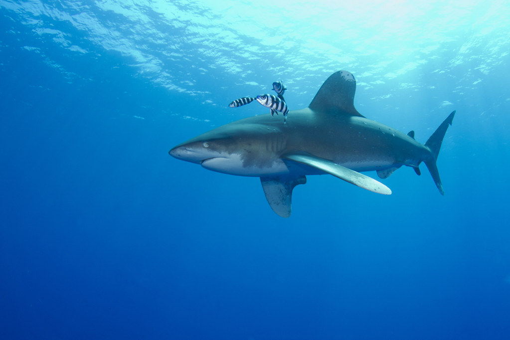
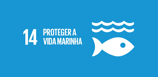

Marine Lifestyle
Animais desconhecidos
Os mares e oceanos estão cheios de animais desconhecidos, e muitos deles não sendo conhecidos por conta de estarem em risco de extinção. Veja alguns deles e suas curiosidades!
(Para mais informações clique aqui).
Animais marinhos em extinção

Várias espécies de animais estão em extinção ou já foram extintos por conta da ação humana no planeta. Conheça alguns deles, e reflita sobre como nós exterminamos animais não só marinhos, mas todos em geral.
(Para mais informações clique aqui).
Objetivo 14 da ONU
O objetivo é proteger a vida marinha, a conservação e uso sustentável dos oceanos, dos mares e dos recursos marinhos para o desenvolvimento sustentável.
(Para mais informações clique aqui).
Poluição Marinha
Principais causas da poluição: Petróleo, combustíveis, produtos químicos, lixos materiais (plásticos, ferros, vidros entre outros), lançamento de esgoto doméstico e industrial, sem o devido tratamento, nas águas, descarga de lama de dragagem, deposição de resíduos radioativos ou perda acidental de submarino nuclear.
Para ter uma base, atualmente, 11 milhões de toneladas de plástico são despejados nos oceanos, todos os anos, sendo o equivalente a um camião de lixo a cada minuto.
Consequências da Poluição
prejuízos para os ecossistemas marinhos, principalmente desequilíbrio ecológico, contaminação de peixes e outros animais marinhos que serão consumidos por pessoas, mortes de pássaros que se alimentam de peixes contaminados, águas das praias tornam-se impróprias para o banho, alta mortalidade, dependendo da poluição, de espécies animais marinhas, degradação de regiões de mangues.
Objetivo
O objetivo é reduzir a poluição e para isso a agência da ONU propõe fim dos subsídios e que os combustíveis fósseis sejam substituídos por fontes de energia renovável. Os autores do estudo destacam que algumas alternativas para a crise dos plásticos também são nocivas ao meio ambiente, incluindo plásticos biodegradáveis, que causam “uma ameaça similar aos plásticos convencionais.